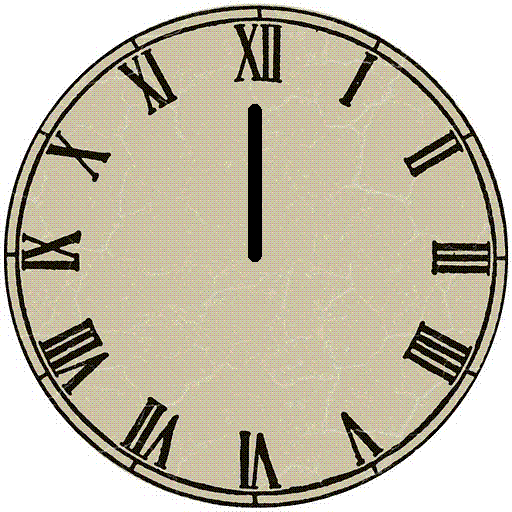

Un número perfecto es un número natural que es igual a la suma de sus divisores propios positivos. Dicho de otra forma, un número perfecto es aquel que es amigo de sí mismo. Así, 6 es un número perfecto porque sus divisores propios son 1, 2 y 3; y 6 = 1 + 2 + 3. Los siguientes números perfectos son 28, 496 y 8128.
Numeros Perfectos
NUMEROS
Numeros Perfectos
Número perfecto, explicó Beremiz, es el que presenta la propiedad de ser igual a la suma de sus divisores, excluyéndose claro está, de entre ellos el propio número.
Así, por ejemplo, el número 28 presenta 5 divisores menores que 28:
1, 2, 4, 7, 14
La suma de esos divisores:
1 + 2 + 4 + 7 + 14
es precisamente igual a 28. Luego 28 pertenece a la categoría de los números perfectos.
El número 6 también es perfecto. Los divisores de 6 —menores de 6— son:
1, 2 y 3
cuya suma es 6.
Al lado del 6 y del 28 puede figurar el 496 que es también, como ya dije, un número perfecto.
El matemático Euclides descubrió que los cuatro primeros números perfectos vienen dados por la fórmula:
n = 2: 21 × (22 – 1) = 6
n = 3: 22 × (23 – 1) = 28
n = 5: 24 × (25 – 1) = 496
n = 7: 26 × (27 – 1) = 8128
NUMEROS
Numeros Perfectos
Un número perfecto es un número natural que es igual a la suma de sus divisores propios positivos. Dicho de otra forma, un número perfecto es aquel que es amigo de sí mismo.
Así, 6 es un número perfecto porque sus divisores propios son 1, 2 y 3; y 6 = 1 + 2 + 3. Los siguientes números perfectos son 28, 496 y 8128.
28 = 1 + 2 + 4 + 7 + 14
496 = 1 + 2 + 4 + 8 + 16 + 31 + 62 + 124 + 248
8128 = 1 + 2 + 4 + 8 + 16 + 32 + 64 + 127 + 254 + 508 + 1016 + 2032 + 4064